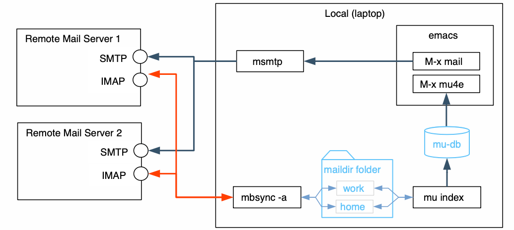
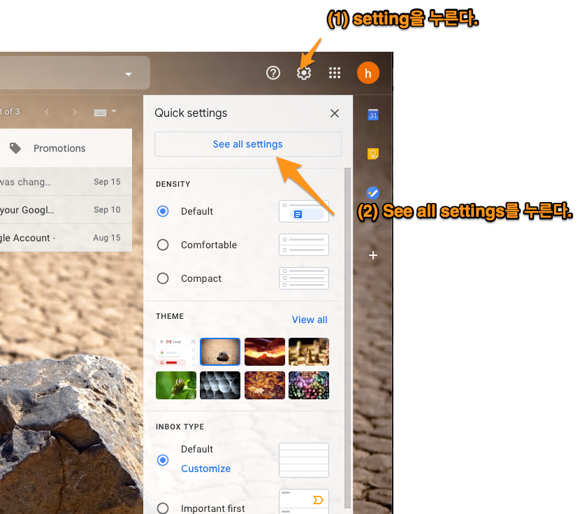
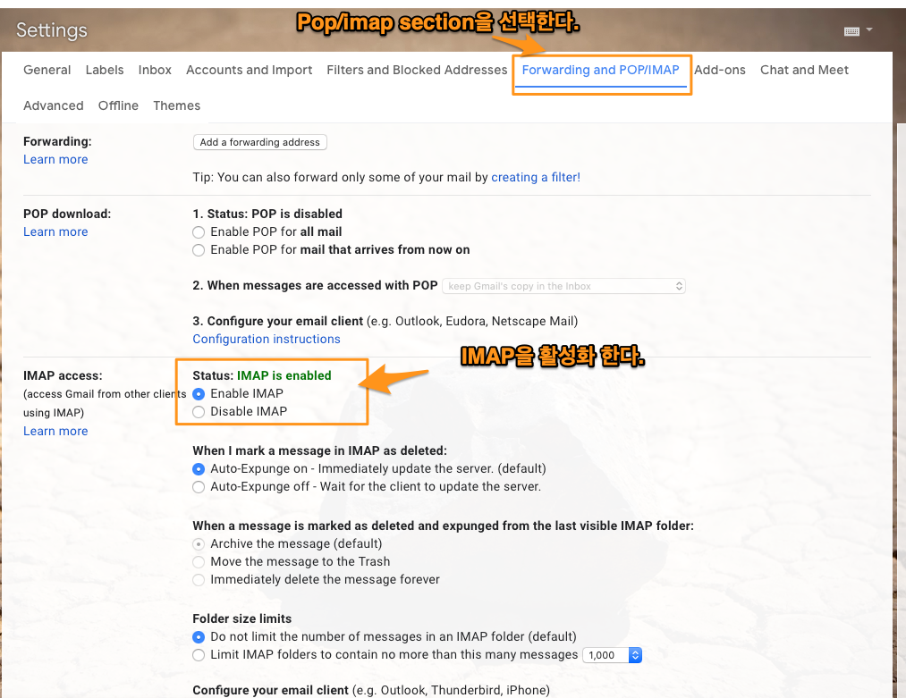
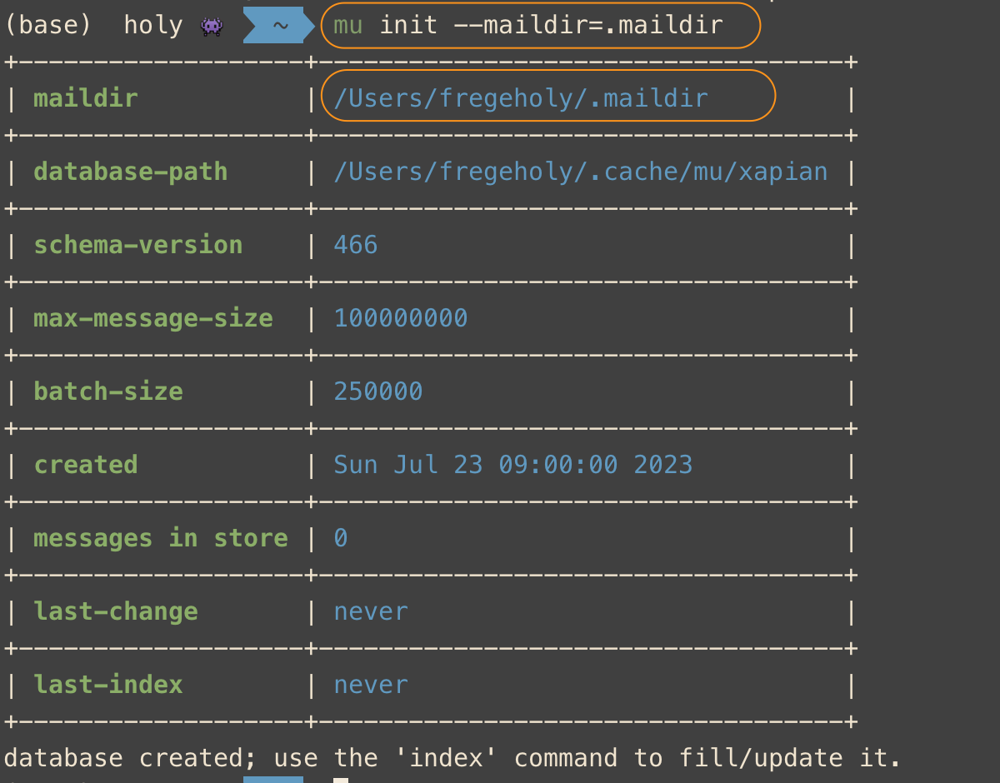
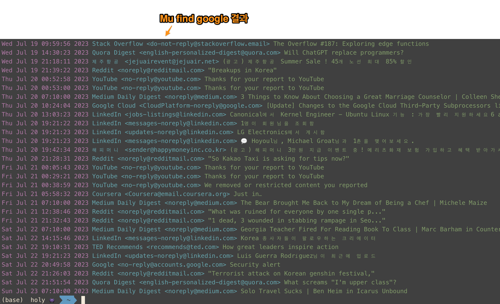
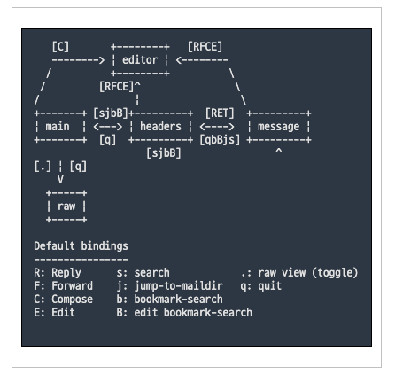
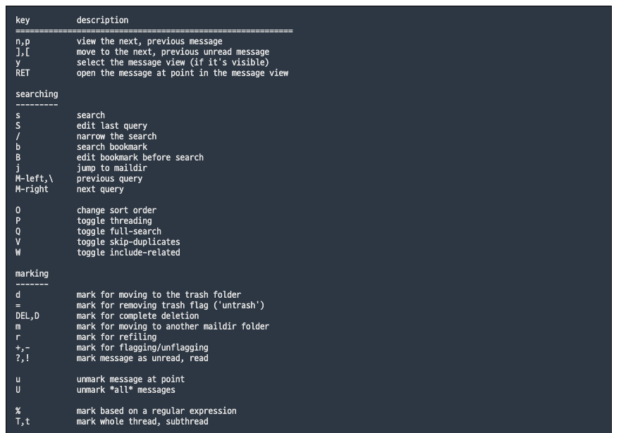
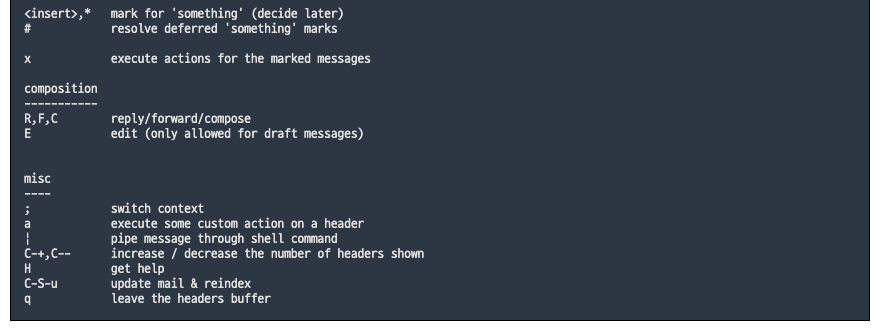

[emacs] mu4e settings
Table of Contents
1. 개요
emacs에서 email을 읽으려고 한다. 언뜻 생각하면, gmail, fastmail같은 email server에 접속해서 mail을 가져와서 보여주면 되는거 아닌가? 그렇게 생각할 수 있다. 근데 내부적으로는 복잡하다. emacs가 email client 같은 역할을 하지 않기때문이다. 즉, emacs는 외부에 있는 email server에 직접 연결하지 않는다. 이런 behind scene을 알아야 설정과 설치가 가능하다. 우선 emacs에서 mail server에 접속해서 mail을 보여주는 것처럼 하는 package는 mu4e다. 그리고 내부동작을 간단히 설명하면 local computer에 daemon을 하나 만든다. 이 daemon은 mbsync, offline imap과 같은게 있다. 이 daemon이 gmail이나 fastmail과 통신을 해서 자체적으로 email보관함에 넣어두는 역할을 한다. 그래서 emacs의 mu4e가 내부 daemon에 저장된 mail을 꺼내서 보여주는 형태다.

Figure 1: overview mu4e
우리는 mbsync라는 daemon을 사용할 것이다. mbsync는 gmail과 같은 email server와 통신을 해서 email을 가져오거나 보낸다. 둘사이에 통신방법을 정해야 하는데, 그 과정이 step1에 있다.
2. [step 1] remote email server setting
2.1. gmail settings
먼저 mail server를 setting한다. gmail과 mbsync와 imap을 사용해서 email을 다운받을 것이다. setting 방법은 다음과 같이 gmail에서 설정한다.
[gmail settings]

Figure 2: gmail settings

Figure 3: gmail settings2
2.2. fastmail settings
fastmail에서는 imap을 enable하지 않아도 된다.
3. [step 2] Client Daemon (mbsync) setting
mbysync가 하는 일은 인증작업과 mail을 저장할 저장소를 만드는 것이다.
3.1. mbsync 설치
mbsync를 local에 설치한다. mac에서 mbsync는 isync다.
brew install isync
3.2. 인증 작업1 (openssl)
3.2.1. openssl 설치
mbsync가 gmail이나 fastmail과 같은 email에 연결하기 위해선 인증 작업을 해야 한다. openssl을 설치하고 opessl로 인증서를 가져온다.
brew install openssl brew link openssl --force
3.2.2. openssl로 인증서 가져오기
- gmail
openssl s_client -connect imap.gmail.com:993 -showcerts
위 명령을 내리면, 3개의 fingerprint가 출력되는 데(즉, begincertificate, endcertificate로 끝난다.), 이것이 모두 인증서다. 이것을 복사해서 저장해야 한다. 저장 위치를 난 Users/fregeholy.maildir/certs 여기에 했다. 파일 이름은 순서대로, gmail.crt, google.crt, Equifax.crt로 저장 한다. 이것을 .mbsyncrc라는 설정파일에 다음과 같이 기술한다.
CertificateFile /Users/hoyoul/.maildir/certs/gmail.crt CertificateFile /Users/hoyoul/.maildir/certs/google.crt CertificateFile /Users/hoyoul/.maildir/certs/Equifax.crt
수정 사항
이전에는 위의 certificatefile을 .mbsyncrc에 기술했으나, 제대로 되지 않았다.
그래서 위 파일은 저장만 하고, .mbsyncrc에는 다음과 같이 기술 했다.
[이전 방식]
SSLType IMAPS
CertificateFile Users/holy.maildir/certs/gmail.crt
CertificateFile Users/holy.maildir/certs/google.crt
CertificateFile Users/holy.maildir/certs/Equifax.crt
[변경된 방법]
SSLType IMAPS
SSLVersions TLSv1.2
CertificateFile /usr/local/etc/openssl@3/cert.pem
- fastmail
openssl s_client -connect imap.fastmail.com:993 -showcerts
fastmail은 2개의 certs가 있다.
CertificateFile /Users/hoyoul/.maildir/certs/fm.crt CertificateFile /Users/hoyoul/.maildir/certs/fastmail.crt
수정 사항
fastmail도 위의 gmail처럼 certificate file을 만들어 저장만 하고 .mbsyncrc는 아래처럼 변경했다.
[이전 방법]
SSLType IMAPS
CertificateFile Users/holy.maildir/certs/fm.crt
CertificateFile Users/holy.maildir/certs/fastmail.crt
[변경된 방법]
SSLType IMAPS
SSLVersions TLSv1.2
CertificateFile /usr/local/etc/openssl@3/cert.pem
3.3. 인증작업2 (app password)
3.3.1. app password
.mbsynce를 설정하기에 앞서서, 인증관련 처리를 하나 더 해줘야 한다. 여기서는 gmail에서 mail을 가져오거나, 보내야 하는데, app-password를 발급받아야 한다.
3.4. .mbsyncrc 저장소 설정
- ~/.mbsyncrc라는 mbsync 설정파일을 만든다. 아래 내용을 복사해서 사용한다.
#------------------------------------------------------ # 2개의 imap을 사용한다. 각각의 이름을 Imap account라고 한다. # (1) gmail => gmailcon # (2) fastmail => fastmailcon #------------------------------------------------------ IMAPAccount gmailcon Host imap.gmail.com Port 993 User hoyoul.park@gmail.com Pass gsrupwxkyiepvjwh AuthMechs LOGIN #SSLType IMAPS #CertificateFile /Users/holy/.maildir/certs/gmail.crt #CertificateFile /Users/holy/.maildir/certs/google.crt #CertificateFile /Users/holy/.maildir/certs/Equifax.crt SSLType IMAPS SSLVersions TLSv1.2 CertificateFile /usr/local/etc/openssl@3/cert.pem #------------------------------------------------------ # gmail의 store를 정의한다. store는 group of mailbox이며, # 원격에 있는 gmail store와 다운받은 local의 store가 있다. #------------------------------------------------------ IMAPStore gmail-store Account gmailcon MaildirStore local-store Path ~/.maildir/Gmail/ Inbox ~/.maildir/Gmail/Inbox SubFolders Verbatim # ----------------------------------------------------------- #[gmail channel] channel은 동기화를 담당한다. channel을 만들면 # master와 slave의 동기화를 하겠다는 뜻이다. master와 slave는 gmail과 # local의 store를 말한다. patterns의 *는 모든 mail box를 # 뜻한다. local에서 mailbox를 만들어도 gmail에 동일하게 mailbox가 # 만들어지고, gmail에서 mailbox를 만들어도 local에 생긴다. 그런데, # maildirstore에 보면 inbox라는 mailbox가 기술된것을 볼 수 있다. # inbox는 default mailbox로 gmail server에 있다. master와 slave에 # 있는 모든(*) mailboxes를 동기화 한다. 양쪽에 없는 mailbox가 있다면 # 만든다. #------------------------------------------------------ #All mail Channel my-channel Far :gmail-store: Near :local-store: Patterns * Create Both Sync Pull SyncState * #------------------------------------------------------ # [fastmail 설정] #------------------------------------------------------ IMAPAccount fastmailcon Host imap.fastmail.com Port 993 User holy_frege@fastmail.com Pass eadu273mnpjmpt74 AuthMechs LOGIN #SSLType IMAPS #CertificateFile /Users/holy/.maildir/certs/fm.crt #CertificateFile /Users/holy/.maildir/certs/fastmail.crt SSLType IMAPS SSLVersions TLSv1.2 CertificateFile /usr/local/etc/openssl@3/cert.pem IMAPStore fastmail-remote Account fastmailcon MaildirStore fastmail-local Path ~/.maildir/Fastmail/ Inbox ~/.maildir/Fastmail/INBOX/ Trash ~/.maildir/Fastmail/Trash/ SubFolders Verbatim Channel fastmail Far :fastmail-remote: Near :fastmail-local: Patterns * Expunge None CopyArrivalDate yes Sync All Create Both SyncState *
.maildir/Gmail과 .maildir/Fastmail 폴더가 없다면 생성한다.
3.5. .mbsyncrc test
실제 email server에서 local로 메일을 가져오는지 test한다.
mbsync -a
3.6. 기본 개념
3.6.1. 용어들
3.6.2. 참고
- http://manpages.ubuntu.com/manpages/xenial/man1/mbsync.1.html
- https://manpages.debian.org/testing/isync/mbsync.1.en.html
- group: channel을 묶은것을 의미한다.
- maildir stores: store는 mailbox의 collection을 의미한다. maildir은 local을 의미한다.
- IMAP stores: IMAP을 사용하는 server의 mailbox collection을 의미한다. gmail에 있는 모든 mailbox들을 나타낸다고 봐도 된다.
4. [step 3] mu (mbsync addon) 설치
4.1. mu설치
mu는 mbsync addon으로 생각하면 된다. mbsync에서 설치한 maildir에 있는 mail들을 indexing해서 빠른 검색을 가능하게 해준다. 또한 emacs(mu4e)에서 사용할 수 있는 mu4e interface를 제공한다. mu를 설치하자.
brew install mu
mu를 설치하면 사용할 수 있는 emacs lisp파일을 제공한다. 다음 경로에 mu4e를설정시에 사용된다.
/usr/local/share/emacs/site-lisp/mu/mu4e
4.2. mu 초기화
mu init으로 db를 만든다. mbsync로 email server로 부터 다운받은 mail저장소를 mu에게 알려주면 db에 저장한다.
mu init --maildir=.maildir

Figure 9: mu init
4.3. mu testing
mu index하면 db를 indexing을 한다.
mu index mu find google
결과는 다음과 같다.

Figure 10: mu find
5. [step3] mu4e 설정
mu를 설치했기 때문에, db가 만들어졌고 indexing을 할 수 있다. 이제 mu4e를 emacs에 설치해서 mu에 있는 db를 가져와서 보여주면 된다.
5.1. mu4e 설정
mu4e는 다음과 같이 설정하면 된다.
#(add-to-list 'load-path "/usr/local/Cellar/mu/1.10.5/share/emacs/site-lisp/mu/mu4e/") (add-to-list 'load-path "/usr/local/share/emacs/site-lisp/mu/mu4e/") (require 'mu4e) (require 'smtpmail) (setq mu4e-maildir (expand-file-name "~/.maildir")) (setq mail-user-agent 'mu4e-user-agent) (setq mu4e-drafts-folder "/[Gmail].Drafts") (setq mu4e-sent-folder "/[Gmail].Sent Mail") (setq mu4e-trash-folder "/[Gmail].Trash") ;; smtp mail setting; these are the same that `gnus' uses. (setq message-send-mail-function 'smtpmail-send-it smtpmail-default-smtp-server "smtp.gmail.com" smtpmail-smtp-server "smtp.gmail.com" smtpmail-local-domain "gmail.com")
6. mu4e 기본 사용법
기본 사용법은 아래를 참고한다.

Figure 11: 기본 사용법
key binding은 다음과 같다.

Figure 12: key binding

Figure 13: keybinding2
7. mu4e 사용법 (update)
C-c C-u: 언제 어디서나 update할 수 있다.
8. mu4e 사용법 (편지 쓰기)
- M-x mu4e로 들어간다.
- 편지 쓰기 (C를 누른다) ;; 언제 어디서든 Capital C를 누르면 된다.
- attachment( C-c C-a를 누른다. )
- 작성을 완료한다. ( C-c C-c )
- cc 추가
- C-c C-f C-c (cc field가 만들어진다.)
- bcc 추가
- C-c C-f C-b (bcc field가 만들어진다.)
9. mu4e 사용법 (답장 편지)
- 편지 읽기
- R(reply)를 누른다.
- 작성을 완료한다.(C-c C-c)
10. mu4e 사용법 (org mode에서 편지쓰기)
mu4e-org를 사용한다.
(require 'mu4e-org)